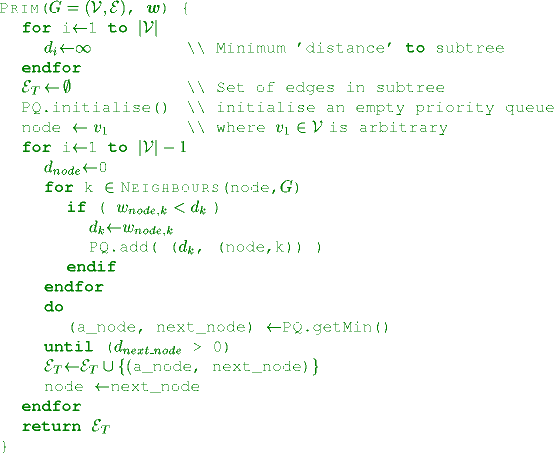
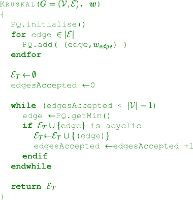

AICE1005 Algorithms and Analysis Lab A3
Preparation
- We are going to write some C++ classes. If you are still new to this look at the preparation for lab A2.
- We are going to look at binary trees and graphs. If you are unsure of these look at the lectures.
Marking
Full marks will be given if you attend the lab for 3 hours or you have finished all parts. If you miss a lab there will be an opportunity to redo a lab or you can complete the lab in your own time and send me the code.
Binary Search Trees
We provide a simple binary search tree class. This does not do any balancing. You can view the graph using the class method show_tree() or (more prettily) using print_tree.
- Write a class recursive method to compute the average depth of the tree (note that the depth of a node is the distance from the root). The easy way to do this is to compute a method finding the total depth of all nodes and then divide this by
size().
- Write a programme that generates 10 random arrays of size
n and find the average "average depth". You might want to use sos.h and code.cc to compute the average. You may use a chatbot to generate the code, provided you understand the code being generated.
- Plot a graph of average depth of binary tree versus
log(n) and find an empirical fit for the average depth of a binary search tree with no balancing. You might want to use python's matplot lib for balancing. You may also use a chatbot to generate the plotting code.
Graphs
- I have written a graph class (graph.cc) with a constructor
Graph(n,p) where n is the number of vertices and p is the edge probability. Each vertex has a 2-d position and the edge has a weight equal to the distance between the vertices.
- You can visualise the graph using
graph.draw(). You will need matplot lib installed.
- Write a method to compute the minimum spanning tree using Prim's algorithm. Prim's algorithm is illsutrated in here. You should use the STL's
priority_queue to implement prim's algorithm.'

- Write a second method using Kruskal's algorithm (you can use quick sort to sort the edges). Kruskal builds a minimum spanning tree by adding the shortest available edge that does not form a loop as illustrated here. It uses
disjointSet.h to ensure no loops.

- Compare the minimum spanning tree of both algorithms.
Help
Adam Prugel Bennett